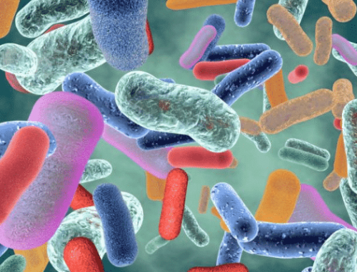
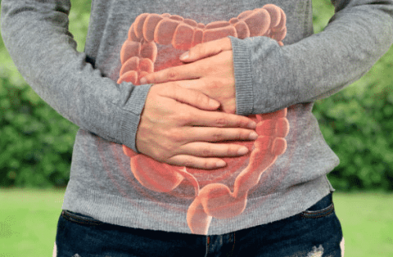

Good Bacteria Is Connected To Nearly All Aspects Of Your Well Being
Did you know that there are more bacterial cells in your body than human cells?
Our body is a walking ecosystem of of both, good and bad bacteria…
Beneficial bacteria are found all over your body… it’s called a ‘symbiotic relationship’, where both parties benefit from living together.
In our case, good bacteria helps maintain good health.
Our good bacteria are a collection of native species to our body… if something causes them to die off… bad bacteria (alien to our body) start to take over… causing health problems.
If you’re lacking certain beneficial bacteria on your skin, you may suffer from skin problems like acne, boils, or rashes…
If you’re lacking certain good bacteria in your mouth you may suffer from bad breath…
But if the good bacteria in your gut begins to die off… you’re prone to a long list of diseases.
Good Health Relies On Good Bacteria In Your Gut
The majority of healthy bacteria lives in your gut… this collection of native, good bacteria is called the microbiome.
The microbiome is a popular buzz word in the health community… and for good reason.
This is because over the last 15 years, a mountain of research has found that beneficial gut bacteria assists in a wide range of body functions such as:
- The immune system
- Skin health
- Metabolism
- Food cravings
- Energy levels
- Heart health
- Hormone production and regulation
- Liver efficiency
- Regulating inflammation
- Kidney health
- Concentration
- Autoimmune function
- Your mood
- Mental health
- Vitamin production (not found in the diet)
- Pancreatic health
- Joint Health
- And a long list of lesser-known body functions…

Your Microbiome Acts As An Independent Body Organ
The human body is populated by a diverse community of microscopic creatures… dominated by bacteria, but also including viruses and fungi.
Although found all over the body, the majority of these micro-organisms live in your gut. This is called our ‘microbiome’ (meaning: a community of microbes).
A healthy person has around 4000 different species of beneficial bacteria living in their intestines. As mentioned moments ago, this good bacteria is responsible for maintaining a long list of body functions…
The microbiome even assists in selecting which parts of your DNA gets used and which that remains dormant.
So technically speaking… you’re more bacteria than you are human!
Throughout our lives, we help shape our own microbiomes — plus they adapt to changes in our environment.
Modern living takes its toll on our microbiome. As our microbiome dies off, the space left over gets taken over by bad bacteria. A gut overgrowth of bad bacteria is known as gut dysbiosis.
After a lifetime of processed foods, exposure to pollution, chlorinated water, non-organic food, antibiotics and stress, our gut health becomes compromised.
Eventually, the gut becomes an overly acidic environment.
When the pH balance goes past 7, beneficial bacteria struggle to survive. As a result, chronic inflammation can set in… which can trigger a long list of diseases.
Low Levels Of Healthy Gut Bacteria In Overweight People
In a recent Danish study, researchers found that people with low amounts of healthy gut bacteria had slower metabolisms, insulin resistance, dyslipidemia and inflammation compared with test subjects with a healthy gut.
This isn’t a matter of genetics… rather a result of lifestyle choices.
Several well-known studies have demonstrated that gut microbiome differed completely between identical twins. This resulted in one twin suffering from obesity and the other who was slim and healthy.
Are you really making your own food choices? – The organisms in our gut feed on different things, some like leafy greens, some like protein, others prefer natural carbohydrates…
Bad bacteria on the other hand, loves to eat sugars, refined carbohydrates, processed food, and saturated fats…
Your gut is often referred at the second brain because it’s connected through millions of nerves, that travel along the vagus nerve. This allows bacteria to send signals to the brain…
Bad bacteria have a high ‘double rate’ which means they need to feed more often… So they use their ‘hotline’ (to the brain) to give you the urge to snack… and make poor food choices.
On the flip side, good bacteria give you the urge to make healthier food choices. Good bacteria also produce chemicals that make you feel full sooner… while blocking the urge to snack.
Think for a moment about what you ate last… was it really your choice… or is it the microscopic creatures who live inside your gut?
The Bacteria Living In Your Gut Has A Huge Impact On The Way You Feel
If you’ve ever “gone with your gut” to make a decision…
Or felt “butterflies in your stomach” when nervous… then you’re likely getting signals from an unexpected source; your “second brain”.
The gut can’t think for itself, but it can send signals to the brain which affects how we think and act.
The bacteria in our gut may play a role in our behaviour
Researchers discovered that if they colonized the gut of a mouse with the bacterial strain: Toxoplasma gondii, an intriguing thing happens… they lose their fear of cats.
Strangely, they even became attracted to cats… and sadly for them, they became dinner for cats.
In human studies, from Ohio state University found that toddlers with the most diverse microbiome had the highest number of positive behavioural traits… like being confident and curious.
The same study also found strains of bacteria that caused toddlers to be sociable.
This research makes you think… how much of your personality is actually you… and how much of your personality is your gut microbes?
Gut health and mental health
Studies indicate that that an unhealthy microbiome (gut dysbiosis) can be a direct cause for depression. This is because the gut produces 95% of your ‘happy hormone’- serotonin. It’s a major key to feeling positive, optimistic, upbeat, and even motivated.
Scientists recently discovered an important gut-brain connection with mice research.
They sterilized the animal’s microbiome, then transplanted a gut-sample of a person suffering with bouts of depression into the gut of mice… this resulted in the mice showing anxiety like behavior, and symptoms of low mood.
The link between poor gut health and depression is still needs more research. But if you need a healthy gut to produce adequate levels of serotonin (the happy hormone)… one can draw their own conclusions.
Bad Bacteria Can Cause Leaky Gut Syndrome
The lining of your gut is only one cell thick… fortunately, it is protected by our microbiome, which produces butyrate that helps maintain a strong mucus barrier.
But an overabundance of bad bacteria can break down this barrier… which causes microscopic holes in the gut lining.
This results in undigested food and bacteria seeping into the bloodstream… This is called “leaky gut”.
Affecting at least 38% of Americans, leaky gut can trigger a wide range of diseases such as… irritable bowel syndrome, autoimmune diseases, skin rashes, chronic fatigue syndrome, and mood disorders.
GMO food linked to leaky gut
When concentrated, the bacterial strain “Bacillus Thuringiensis” (BT), kills insects by breaking open their stomach.
Bio-engineers take the gene that produces the toxin and inserts it into corn to allow the plants to do the killing… instead of using pesticides.
The Environmental Protection Agency (EPA) said, “Don’t worry, BT only breaks open the stomachs of insects, and is harmless to humans and animals”… but after further testing, it turned out that the EPA got it wrong.
It is now widely believed that BT GMO corn is the reason why there has been a huge influx of stomach related diseases caused by leaky gut.
As you probably realize, reversing the damage to the intestinal walls is paramount to health and wellness…
Feeding and nurturing your microbiome is the answer.
Good bacteria make butyrate which nourishes and strengthens the gut lining… putting an end to leaky gut and gut-Inflammation related illnesses.
Signs That Your Microbiome Is Unhealthy
Sleep disturbances, constant fatigue and depression – The gut produces a hormone which regulates mood and sleep.
Skin irritation – inflammation in the gut can cause holes in the gut lining that leak certain proteins. This can cause skin irritation like eczema and psoriasis.
Food intolerances – Different from an allergy; food intolerances are the result of not being able to digest certain foods properly. This results in gas, bloating, stomach pains and diarrhea.
Weight gain – An imbalanced gut can affect your body’s ability to regulate insulin, absorb nutrients and store fat.
Frequent stomach upsets – Stomach upsets like heartburn, gas, bloating, diarrhea and constipation are all symptoms of an unhealthy gut.

Probiotics – A Great Way To Support Your Microbiome
Probiotics are live bacteria that are highly beneficial for health.
The most common are bacteria that belong to groups called Lactobacillus and Bifidobacterium. Other bacteria may also be used as probiotics, as well as yeasts such as Saccharomyces boulardii.
Probiotics are found naturally in yogurt, and fermented foods such as:
- Kimchi
- Sauerkraut
- Miso
- Kifir
- Natto
- Kvass
- Raw milk and cheese
- Apple cider vinegar (must contain ‘the mother’)
- Pickles (made from cucumber)
- Brine-cured olives
- Tempeh
- Kombucha
Nurture your microbiome with the probiotic-rich drink – kombucha!
FREE EBOOK & VIDEO SERIES
(No, you don’t need to add your details)
Kombucha Kickstart
Easily Brew Your Own Kombucha & Enjoy The Immense Health Benefits
You’ve heard of Kombucha, right? It’s a hugely popular probiotic drink… made by fermenting black tea. Kombucha is incredibly good for your gut health… it’s refreshing and delicious. It’s not cheap to buy at the health store… that’s for sure. But not if you brew your own! That’s why I want to give you this great ebook… simply click the link and grab the download… no need to add your details. ==>Follow this link and grab your complimentary ebook ==>Follow this link for the complimentary 10 part video series (to view these videos, you’ll need to use your computer instead of your phone)